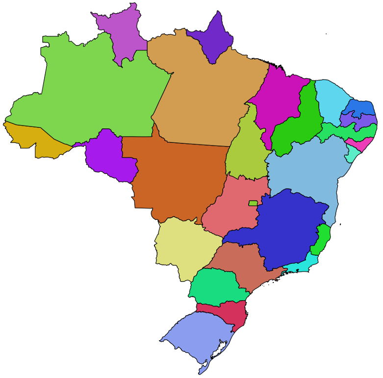

3.5.1. Carregando Dados no PostgreSQL/PostGIS
Considere o conjunto ESRI Shapefile mostrado na Tabela 3.30, que contem os limites estaduais brasileiros referentes ao ano de 2018.
 |
Unidades Federativas do Brasil - 2018
Tipo Geométrico: MultiPolygon
|
3.5.1.1. PostGIS Shapefile Import/Export Manager
O PostGIS possui um aplicativo desktop denominado PostGIS Shapefile Import/Export Manager que pode ser utilizado para importar um conjunto de arquivos no formato ESRI Shapefile para uma tabela do banco de dados PostgreSQL com colunas geométricas do PostGIS. A Figura 3.20 mostra como acessar essa ferramenta no Microsoft Windows.
{kind=link}
Figura 3.20 - Acesso ao PostGIS Shapefile Import/Export Manager no Microsoft Windows.
Na janela prinicipal dessa aplicação, defina uma conexão com o Servidor de Bancos de Dados PostgreSQL para o qual você deseja carregar os dados (Figura 3.21).
{kind=link}
Figura 3.21 - Definindo uma conexão com o servidor PostgreSQL.
Informe o endereço do servidor, porta de conexão, nome do banco de dados para o qual você importará os dados e as credenciais di usuário (Figura 3.22).
{kind=link}
Figura 3.22 - Fornecendo as credenciais do servidor PostgreSQL.
Se a conexão ao servidor PostgreSQL for devidamente realizada, uma mensagem de sucesso como a mostrada na Figura 3.23 será apresentada.
{kind=link}
Figura 3.23 - Resultado da conexão ao servidor PostgreSQL.
Em seguida, selecione o arquivo uf_2018.shp (Figura 3.24).
{kind=link}
Figura 3.24 - Selecionando o arquivo uf_2018.shp.
Esta aplicação não detecta automaticamente o SRID associado aos dados. Portanto, informe manualmente o SRID 4674. Alḿ disso, defina o nome da tabela destino como uf (Figura 3.25).
{kind=link}
Figura 3.25 - Informando o SRID e nome da tabela com feições.
Você também poderá forecer mais alguns detalhes sobre como será realizada a conversão e carga dos dados. Para isso, selecione o botão Options... (Figura 3.26).
{kind=link}
Figura 3.26 - Opções de importação.
Na janela apresentada (Figura 3.27), defina o caracter encoding dos dados alfanuméricos e a criação de um índice espacial sobre a coluna geométrica que será criada.
{kind=link}
Figura 3.27 - Opções de importação.
Finalmente, pressione o botão Import para realizar a carga dos dados no servidor PostgreSQL (Figura 3.28).
{kind=link}
Figura 3.28 - Importação dos dados.
3.5.1.2. shp2pgsql
Para transformar um arquivo ESRI Shapefile numa sequência de comandos SQL, com instruções para criação de uma tabela com coluna geométrica, inserção de linhas (features) e criação do índice espacial, podemos utilizar o comando shp2pgsql no terminal de comandos do sistema operacional. Esta ferramenta é distribuída juntamente com a extensão PostGIS.
Com ajuda do aplicativo shp2pgsql, vamos converter o arquivo contendo as Unidades da Federação:
shp2pgsql -c -g "geom" -s 4674 -i -I -t "2D" -W UTF-8 uf_2018.shp public.uf > uf.sql
O comando acima irá gerar um arquivo denominado uf.sql contendo as instruções SQL para criação e carga de dados de uma tabela com o nome uf no esquema public. Para fazer a carga dos dados, utilize o aplicativo de linha de comando psql, que irá ler as instruções do arquivo uf.sql e irá enviar ao servidor PostgreSQL:
psql -h localhost -p 5432 -d bdgeo -U postgres -f uf.sql
Nota
Preparando seu Terminal
Inclua o caminho dos aplicativos instalados pelo PostgreSQL e PostGIS na variável de ambiente PATH para que os aplicativos possam ser chamados na linha de comando do Windows:
SET PATH=%PATH%;"C:\Program Files\PostgreSQL\14\bin"
Se você tiver instalado a versão 14 do PostgreSQL através da distribuição Postgres.app e quiser usar o terminal de comandos, sugerimos incluir o caminho dos aplicativos de linha de comando na sua variável PATH:
export PATH="$PATH:/Applications/Postgres.app/Contents/Versions/14/bin/"
3.5.1.3. QGIS
O QGIS também possui funcionalidades para carga de dados em bancos PostgreSQL com a extensão PostGIS. Para carregar os dados contendo as Unidades da Federação, crie uma fonte de dados associada ao seu servidor PostgreSQL. Para isso, abra o Data Source Manager (Figura 3.29).
{kind=link}
Figura 3.29 - Abrindo o Data Source Manager do QGIS.
Na janela do Data Source Manager, crie uma nova conexão com o servidor PostgreSQL (Figura 3.30).
{kind=link}
Figura 3.30 - Nova conexão ao servidor PostgreSQL.
Na janela que se abre, Figura 3.31, entre com o endereço do servidor e as credenciais do usuário para acesso ao servidor.
{kind=link}
Figura 3.31 - Configurando a conexão ao servidor PostgreSQL.
Se as informações estiverem corretas, o teste de conexão apresentará uma mensagem de sucesso, como na Figura 3.32.
{kind=link}
Figura 3.32 - Conexão ao servidor PostgreSQL configurada corretamente.
Novamente na janela do Data Source Manager, selecione a opção conectar (Figura 3.33).
{kind=link}
Figura 3.33 - Conectando ao PostgreSQL.
Feche a janela do Data Source Manager. Na janela principal do QGIS, selecione a opção de menu (Figura 3.34)
{kind=link}
Figura 3.34 - Selecionando o DB Manager.
Na janela do DB Manager, localize o banco de dados PostgreSQL para o qual você deseja importar os dados e selecione a opção Importar camada/arquivo.. (Figura 3.35).
{kind=link}
Figura 3.35 - Opção de importação de uma camada vetorial para o PostgreSQL.
Na janela apresentada, Figura 3.36, indique a localização do arquivo uf_2018.shp, o nome da tabela a ser criada no PostgreSQL (uf), o nome da coluna geométrica, entre outras informações.
{kind=link}
Figura 3.36 - Janela de importação de uma camada vetorial para o PostgreSQL.
Se a importação for realizada com sucesso, uma mensagem como a apresentada na Figura 3.37 será apresentada.
{kind=link}
Figura 3.37 - Importação para o PostgreSQL realizada com sucesso.
Se você quiser visualizar a camada importada para o PostgreSQL diretamente na área de mapas do QGIS, selecione a tabela uf, como mostrado na Figura 3.38.
{kind=link}
Figura 3.38 - Selecionando uma tabela com feições para apresentação no QGIS.
Em seguida, clique com o botão direito do mouse sobre o nome da tabela. A opção Adicionar na Tela será apresentada (Figura 3.39). Selecione esta opção.
{kind=link}
Figura 3.39 - Adicionar uma tabela com feições na área de mapas do QGIS.
Apresentação da tabela uf (Figura 3.40).
{kind=link}
Figura 3.40 - Exibindo uma tabela com feições do PostgreSQL/PostGIS.